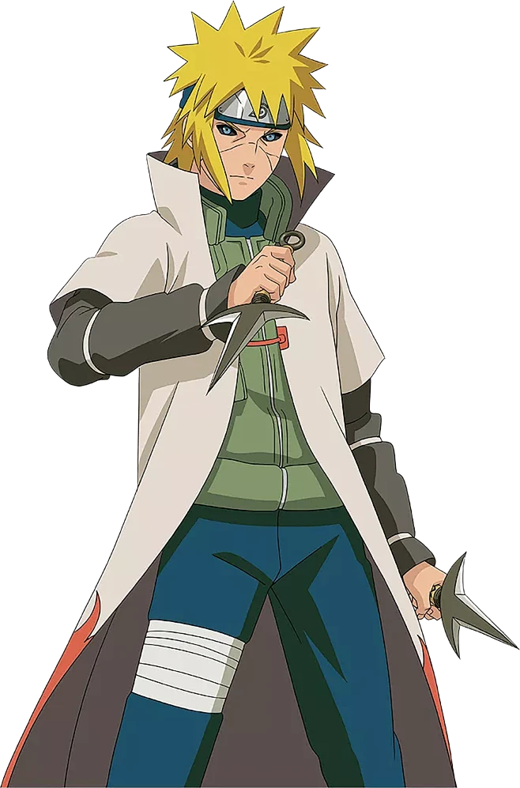

波风水门，木叶隐村四代目火影，被誉为黄色闪光，忍界速度天花板，实力强大且智勇双全，深受全村人敬重。
一、年少成名 天赋出众
出身普通家庭，无强大血脉加持，全靠自身努力与顶尖天赋崛起。
年少便展露超凡战斗头脑，学习忍术速度极快，实战应变能力极强。
早年外出历练声名渐起，凭借超快身法在忍界闯出赫赫威名。
二、拜师修行 结识挚友
拜自来也为师修习忍术，同时潜心钻研时空间忍术。
与玖辛奈相知相爱，组建家庭，育有一子漩涡鸣人。
组建专属小队，带领卡卡西、带土、琳一同执行任务，悉心教导后辈。
三、黄色闪光 威震忍界
精通二代火影开创的飞雷神之术，身法瞬息千里，无人能及。
独创强力忍术螺旋丸，招式简洁威力巨大，后期成为忍界主流忍术。
第三次忍界大战驰骋战场，敌人下达遇之可直接放弃任务撤退的命令。
凭借速度与智谋屡立奇功，顺利继任四代目火影，守护木叶安稳。
四、舍身护村 壮烈牺牲
九尾之乱爆发，带土操控九尾袭击木叶，村子陷入巨大危机。
为保护村子与刚出生的鸣人，毅然选择使用尸鬼封尽封印九尾。
将九尾查克拉一分为二，同时把自身意志残留留在鸣人体内。
以生命为代价平息浩劫，年纪轻轻便牺牲，成为忍界一大遗憾。
五、秽土重生 再战忍界
第四次忍界大战被药师兜以秽土转生之术复活，重回战场。
复活后实力重回巅峰，飞雷神、螺旋丸依旧所向披靡。
快速奔赴前线支援忍者联军，联手历代火影并肩作战。
熟知战局走向，多次破解强敌招式，牵制十尾与反派主力。
六、父子并肩 圆满释怀
战场之上与亲生儿子鸣人正式相认，父子联手一同征战强敌。
亲眼见证鸣人成长，知晓儿子背负的一切苦难，内心满是欣慰。
全力协助封印大筒木辉夜，完成身为忍者最后的使命。
解开秽土转生束缚后，安心与家人告别，灵魂安然回归净土。
七、人物信条
身为火影，便要拼尽一切，守护村子与后辈的未来。